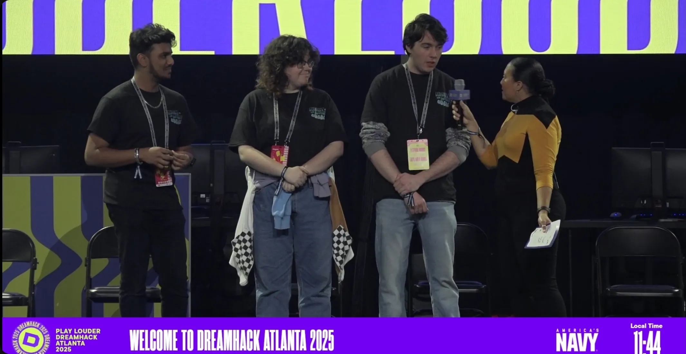
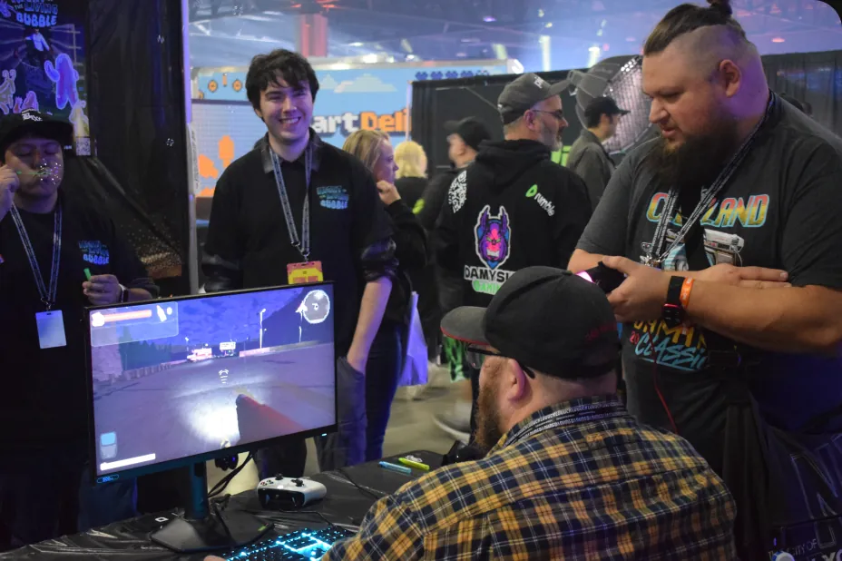
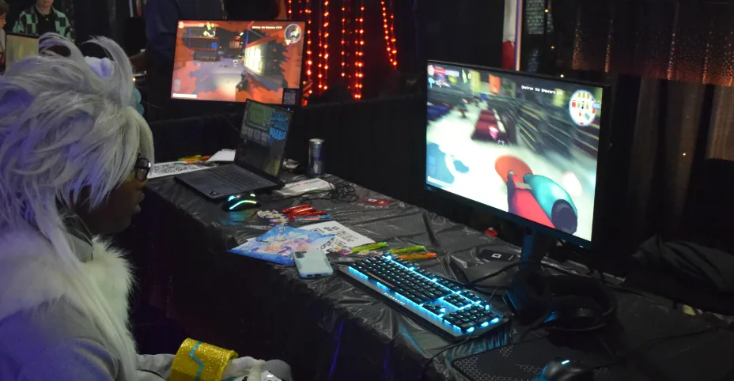

Night of the Living Bubble
Gameplay Programmer & Technical Artist
- Software:
- Unreal Engine - Github - Jira - Trello - Figma - Steamworks
- Languages:
- C++ - Unreal Blueprint
- Team Size:
- 6
What began as a 48-hour Global Game Jam prototype evolved into a polished, Steam released FPS. As Gameplay Programmer, I architected the game’s foundation, transitioning an experimental concept into a scalable production-ready framework featured at SIEGE Indie Fest and DreamHack Atlanta.
Technical Architecture
Fluid Multi-Input Systems: Engineered a responsive player controller featuring sprint/exhaustion mechanics and a diverse toolset (Grapple, Blower, Flamethrower). Developed a unified input wrapper to ensure seamless usage between Keyboard/Mouse and Controller.
Dynamic Enemy Ecosystem: Programmed a diverse AI roster including Swarmers, Explosive Attackers, and Dynamic Bosses. Focused on balancing high-intensity combat with performance, utilizing optimized sensing and behavior logic to maintain steady framerates during large encounters.
Architecture & Systems Design: Developed robust game frameworks including persistent Save/Load systems, level-specific stat tracking, and modular spawner logic. Leveraged Blueprint Interfaces and Custom Structs to minimize class dependencies and ensure a decoupled, "clean" codebase.
Optimization-First: Streamlined Blueprint overhead and AI logic to ensure scalability. By creating reusable, data-driven systems, I empowered the art and design teams to iterate on content rapidly without requiring constant technical oversight.
Technical Challenges & Solutions
Challenge: Creating Dynamic and Unique Enemies
As the project evolved from a standard horde-survival prototype, the AI required more sophisticated behaviors and engagement rules beyond basic pathfinding and player-chasing.
Solution
Architected a modular AI ecosystem categorized into four distinct behavioral archetypes: Chasers, Launchers, Explosive, and Static. By establishing strict baseline metrics for movement speeds, sight distances, and engagement ranges, I ensured each enemy type was instantly readable from a distance. This framework powered varied combat loops, driving unique enemy logic such as player-launching Bubble Goats, flanking Plushie Squids, and Lightbirds that trigger explosive blinding effects.
Challenge: Dynamic Upgrades
To maintain engaging pacing and mechanical depth across levels, we needed to introduce gameplay variables that prevented combat loops from becoming predictable, even with a diverse enemy roster.
Solution
Engineered a dynamic upgrade system utilizing everyday household items to expand the player's combat sandbox. I programmed distinct, physics-driven mechanics for each weapon, including a Hairdryer for localized crowd-control knockback, a Flamethrower for Area of Effect (AoE) burn damage, and a Measuring Tape that functions as a physics-based grappling hook to enhance vertical mobility and evasion.
Challenge: Complex Enemy Bosses
The game’s thematic progression through Bubble, Plushie, and Wood environments required bespoke, escalating boss encounters that challenged the player using mechanics tied directly to those material types.
Solution
Designed and engineered the complete logic flow for four distinct bosses (Bubble Dragon, Plushie Minotaur, Wooden Snake, and Amalgam). I built a scalable phase system where attack complexity and variety dynamically upgraded as health pools depleted. This culminated in the Amalgam encounter, requiring a complex state machine that cycled through the attack patterns of the three previous bosses before seamlessly combining them all in a high-intensity final phase.
Blueprint UE Graph
QA Analysis
In-Person Events: Hosted frequent live playtesting sessions to rapidly gauge user feedback. These in-person events were essential for reading player reactions, analyzing their mechanical choices, and adjusting the game feel in real-time.
Online Sessions: Conducted online testing to capture structured feedback from players in their natural environments, ensuring broad hardware compatibility and performance across different PC specs.
Conventions: Exhibited the game at conventions to validate our core loop and gauge audience interest in a large scale environment. These events proved the game’s unique appeal, helping us network directly with players and successfully build a dedicated community.



Feedback:
Playtesting provided crucial insights but also presented a major design challenge, finding the perfect balance between intuitive guidance and player discovery. This experience taught us how to effectively filter raw user feedback, learning when to implement player suggestions to smooth out gameplay, and when to hold firm to preserve the intended difficulty and design vision.
Reflections Gamejam to Full Release
Night of the Living Bubble was my first commercial indie release and a major catalyst in my development as a Gameplay Programmer and Designer. It taught me that building the core mechanics is only half the battle, the true challenge lies in the final polish, refining game feel, optimizing logic, and iterating on existing features to craft a high-quality player experience.
While I spearheaded the engineering and design architecture, I wore many hats and contributed to nearly every facet of production:
Unique Design
Designed clear visual language for all enemy types, allowing players to easily recognize threats and react to their specific behaviors from afar.
Team Lead
Managed team dynamics and scope constraints by balancing creative input with realistic development scope, keeping the team motivated, engaged, and focused on the finish line.
Social Media Content
Directed the game's social media presence by creating promotional content and actively engaging with our player base to maximize visibility and interaction prior to launch.